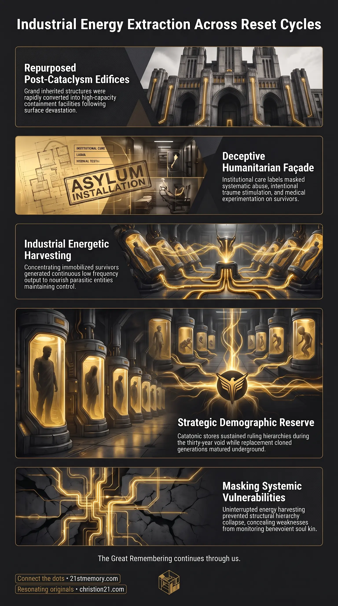

Draining Catatonic Survivors
Draining Catatonic Survivors — Shell-shocked survivors are immobilized in asylum wards and drained as a living loosh reserve.

Draining Catatonic Survivors — Shell-shocked survivors are immobilized in asylum wards and drained as a living loosh reserve.

Asylums Were Built as Human Batteries — Five-thousand-bed asylums bridge the decades when the surface population is gone and the cloned generation is still maturing.
Lunatic asylums represent a critical operational apparatus within the post-cataclysm architecture of parasitic control, functioning fundamentally as high-capacity loosh power stations rather than medical institutions. Far from being emergency shelters or genuine treatment centers established for the mentally infirm, these massive installations were pre-planned, repurposed architectural facilities designed to contain, exploit, and slowly harvest hundreds of thousands of surviving human beings. In the wake of a planetary reset, the sudden devastation of the prior civilization leaves a population of severely traumatized survivors wandering the stripped landscape. Rather than being an accidental byproduct of systemic slaughter, these shell-shocked survivors are gathered into secure institutional compounds under the deceptive banner of societal care.
Within the energetic economy of the occupying hierarchy, a five-thousand-bed asylum operates precisely as an industrial-scale loosh battery. The underlying function of the facility is energetic extraction: sustaining the parasitic entities and demonic hosts that direct human leadership during the precarious decades when the global human herd has been annihilated and the replacement population is still maturing in underground facilities. By concentrating, torturing, and experimenting on catatonic survivors, lunatic asylums prevent severe energy starvation within the demonic hierarchy, maintaining energetic stability and preventing structural weaknesses that could be exploited by external liberators.
The primary revelation surrounding lunatic asylums is that the occupants labeled as lunatics were never biologically defective or organically insane; they were deliberate, pre-planned shell-shocked survivors of an orchestrated reset. These individuals were pushed into profound psychological shock after witnessing the open, unrestrained slaughter, rape, and flaying of their families by reptilian entities and incarnate demonic forces. Their extreme state of mental dissociation and catatonia was factored into the long-range planning of the occupying parasites, who anticipated the necessity of collecting and concentrating these individuals immediately following the cessation of surface hostility.
Furthermore, the existence of asylums exposes the extreme vulnerability of the occupying power structure during a transitional reset era. Because the surface population—including the vast majority of children—is exterminated and consumed during the harvest, the entities face an immediate, existential supply disruption. The catatonic store of asylum inmates is the sole mechanism bridging this gap. Without this planned energetic reserve, the demonic infrastructure suffers systemic starvation, creating a detectable weakness that would alert the benevolent family—advanced extraterrestrial soul kin—who would intervene and dismantle the control lattice. The asylum system exists to close this vulnerability.
The monumental buildings identified as lunatic asylums were not originally designed or constructed by the post-reset society to house the mentally ill. These grand edifices were inherited from the advanced, harmonious civilization that existed prior to the reset. Utilizing their long-range foresight, the parasites planned the future utilization of these massive facilities well in advance of the reset event itself. Within days or weeks of the cataclysm concluding, these grand architectural structures were rapidly repurposed into high-security containment centers and proto-FEMA facilities containing five thousand or more beds.
The institutional title of "lunatic" itself carries technological roots tied to the architecture of realm manipulation. The lunar satellite operating within the firmament acts as a parasitic transmission hub and loosh gathering station, projecting targeted low-frequency waves during specific phases to deliberately agitate human neurochemistry, an energetic distortion from which the concept and designation of the lunatic originally derived.
While public narratives and institutional records proclaim that these facilities were built out of progressive medical reform and compassionate care for the destitute, the operational reality inside was strictly predatory. The sign of "Care" on the entrance masked a system of systematic torture, degrading humiliation, violent physical abuse, and clinical experimentation. Inmates were not treated for psychological trauma; rather, their existing trauma was actively maintained, stimulated, and intensified. Medical procedures served as secondary pretexts to induce agony and despair, converting the facilities into living slaughterhouses where victims were eventually worn down, sexually violated, and killed.
Within the mechanics of realm control, an asylum operates as a localized power plant generating vast currents of loosh. Because loosh is produced in direct proportion to acute terror, grief, physical pain, and spiritual degradation, concentrating thousands of traumatized human souls into a confined environment creates an energetic vortex. The facility operates as an industrial extraction grid:
The absolute operational necessity of the asylum system stems from the demographic collapse inherent to a reset. When the reset concludes, the surface population has been completely eradicated, and the existing child population has been fully harvested for energetic and biochemical consumption. To re-establish the human workforce, the occupying forces extract cellular material prior to execution and incubate cloned replacement infants in underground facilities.
This creates a critical temporal chasm:
To bridge this twenty-to-thirty-year gap, the occupying forces utilize the asylum population as a catatonic store. The immobilized, shell-shocked survivors represent the only substantial, concentrated supply of loosh remaining on the planet, barring the minor energetic extraction derived from torturing cattle. They are rationed, maintained in states of sustained misery, and harvested over decades until the new cloned generation has populated the repurposed cities.
Lunatic asylums sit in direct operational alignment with the broader post-reset cleansing campaigns designed to wipe historical memory. While hundreds of thousands of shell-shocked survivors were locked inside asylums to serve as loosh batteries, those survivors who were found wandering the landscape and escaped institutionalization were subsequently targeted for systemic elimination. This dynamic directly motivated the orchestration of World War 1. The global conflict was engineered specifically to slaughter all remaining individuals aged sixteen to their mid-fifties who possessed lingering memories of the true flat plane, natural healing modalities, and old-world free-energy architecture.
The asylum system also directly interfaces with the repopulation pipeline. As the catatonic adults were being drained inside the five-thousand-bed compounds, the empty Tartarian cities were systematically cleared of atmospheric energy technologies, bells, and high-frequency nodal generators. Cloned orphans transported on rail networks were brought in to inhabit the cleared urban environments under the tutelage of pre-selected, compliant caretakers stored in shielded zones. Once the new cloned generation attained maturity, the strategic reliance on the post-reset asylums concluded, paving the way for the institutionalization methods of the modern era.
The mechanics of lunatic asylums reveal the definitive systemic weakness of the parasitic hierarchy: an acute, structural vulnerability to energetic starvation. The entire planetary matrix and the physical power wielded by administrative sold souls are utterly dependent upon a continuous, uninterrupted influx of human suffering. If this loosh pipeline is severed, the demonic entities lose functional vitality, causing systemic paralysis across their entire command structure.
The creation of the asylum network demonstrates that the reset mechanism is fraught with operational danger for the parasites. Had the demons been left to starve during the post-reset demographic drought, the energetic drop would have created a massive tear in the suppressive density overlays. This energetic vacuum would have exposed their operational weakness directly to benevolent soul family extraterrestrials monitoring the realm. Such exposure would have triggered immediate intervention by these benevolent forces, enabling them to breach the containment field and collapse the entire matrix system. Lunatic asylums were therefore an existential defense protocol for the parasitic hierarchy, deployed to mask structural vulnerability and ensure their continuous survival across reset cycles.
This topic is free to share. Support the archive →